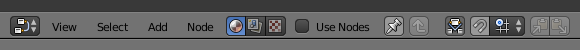
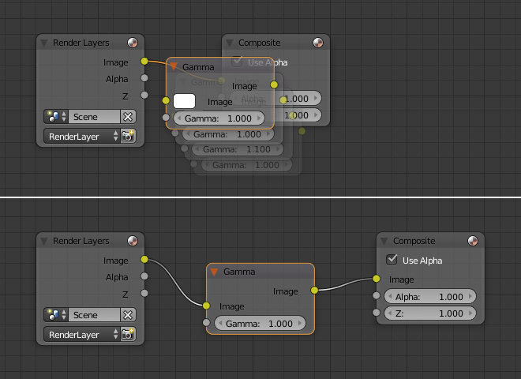

简介¶

节点编辑器。¶
节点编辑器 用于处理基于节点的工作流程。可以使用节点编辑器标题栏中的按钮来更改节点树类型。但是，在这里我们只会给出 节点编辑器 的概述。在下面的列表中，它显示了不同类型的节点树的列表以及每个节点树的文档链接。
图标 |
名称 |
文档 |
|---|---|---|
材质节点 |
||
合成节点 |
文档可以在 合成 部分中找到。 |
|
纹理节点 |
纹理节点位于 UV/图像编辑器 文档中。 |
选择要使用的节点后，必须使用 使用节点 按钮启用节点。
界面¶
标题栏¶
标题栏 包含各种菜单，按钮和选项，和部分基于当前节点树的类型。

常用节点标题栏选项。¶
- 视图
此菜单更改编辑器的视图样式。
- 选择
该菜单允许你选择一个或多个节点组。
- 添加
该菜单允许你添加节点。
- 节点
用选定的节点来做事，类似于顶点。
- 材质，合成或纹理按钮
节点分为三类，查看列表见 节点树类型。
- 使用节点
告诉渲染引擎在计算材质颜色或渲染最终图像时使用节点图。如果不是，则节点图被忽略，完成材质选项卡或场景的基本渲染。
- 使用图钉
启用后，编辑器将保留材质或纹理，即使用户选择了不同的物体。然后可以独立于3D视图中的物体选择来编辑节点树。
- 转到父按钮
此按钮允许你转到父节点树例如离开一个小组。
自动偏移¶
将具有至少一个输入和一个输出接口的节点放置到两个节点之间的现有连接上时，自动偏移 将根据方向设置自动移动左侧或右侧节点，为新节点腾出空间。 自动偏移 是一项功能，可帮助在不中断用户工作流的情况下交互式组织节点布局。

默认是启用自动偏移的，但可以从节点编辑器标题栏中禁用。
通过按下 T，你可以在移动节点时切换偏移方向。
可以使用用户设置的编辑部分中的 自动偏移间距 设置更改偏移间距。
工具架¶
工具栏 是一个上下文相关区域，本地包含蜡笔的工具和添加节点的按钮。工具架使用标签进行组织。
属性区域¶
属性栏 包含当前选定节点的属性以及节点编辑器特定设置。